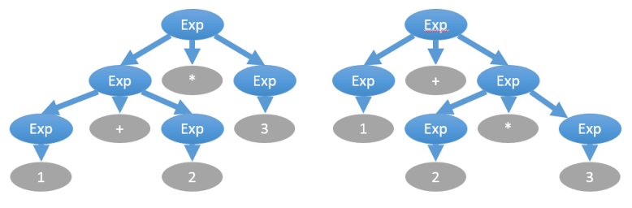
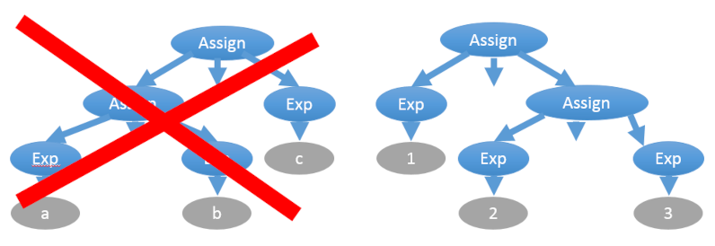

Грамматика указывает на иерархию между символами в формальном языке. Все тексты, соответствующие правилам языка, соответствуют и его грамматике. Иными словами, грамматика — это набор правил, позволяющих:
В большинстве языков символом верхнего уровня является один файл исходного кода, называемый “модулем” или “единицей трансляции”. Например, в языке Python мы можем развернуть абстрактный символ “модуль Python” в список из двух абстрактных (нетерминальных) символов:
<функция>
<ветвление>
После мы можем развернуть оба этих символа, и продолжать разворачивать порождённые символы до тех пор, пока нетерминальные символы не закончатся, после чего останутся лишь терминальные символы:
def main():
print "Hello, World!"
if __name__ == "__main__":
main()
Когда надо остановиться и перестать раскрывать символы? Зависит от уровня абстракции грамматики. Вы можете раскрывать вплоть до отдельных символов. Можно остановиться на токенах (идентификаторах, числах, знаках операций) и дальше не раскрывать, если у вас есть лексический анализатор, который умеет превращать поток текста в поток более абстрактных токенов.
В промышленных компиляторах парсер (синтаксический анализатор) занимается обратной задачей — сворачивает токены, полученных лексером (лексическим анализатором), согласно правилам грамматики, и получает абстрактные (нетерминальные) символы “функция”, “ветвление”, “определение класса” и так далее. Набор символов языка и правил грамматики зависит от языка.
Иерархия Хомского — это общепринятое деление формальных языков на 4 уровня. Чем выше номер типа, тем более скудный язык и тем легче его разбирать программно:
Все реальные языки программирования являются контекстно-зависимыми (тип 1), но большинство может быть разобрано как контекстно-свободные (тип 2) с последующей постобработкой в виде проверок типов и т.п. Не случайно фронтенд компилятора делят на три стадии:
Любая регулярная грамматика имеет эквивалентное регулярное выражение, а также эквивалентный детерминированный конечный автомат (ДКА). Это всё три формы одной и той же сущности. Разобрать строку по правилам регулярной грамматики можно за один проход из начала в конец строки без дополнительной памяти с помощью ДКА.
В промышленных библиотеках регулярных выражениях многие операции избыточны с служат лишь для удобства. Если убрать всё лишнее и оставить самый минимум, достаточный для создания произвольных регулярных выражений, то останутся три операции:
|
Символ |
задаёт объединение |
|
Пример: “a |
b |
c |
d” ищут подстроки “a”, “b”, “c”, “d” |
Применения регулярных грамматик:
# cat /var/run/dmesg.boot | grep CPU
------------------------------------------------------
CPU : Intel(R) Core(TM)2 Quad CPU Q9550 @ 2.83GHz (2833.07 - MHz K8 - class CPU)
Контекстно-свободная грамматика, не являющаяся регулярной, не имеет ни эквивалентного регулярного выражения, ни эквивалентного детерминированного конечного автомата. При попытке сформировать ДКА количество его состояний будет расти бесконечно, и так же бесконечно будет возрастать глубина регулярного выражения. В контекстно-свободной грамматике правила для нетерминалов определяются без окружающего контекста, т.е. A → β, где “A” — нетерминал, “β” — цепочка нетерминалов и терминалов. Примеры таких грамматик:
Такие грамматики не получится разобрать в один проход из начала в конец строки с помощью ДКА, но можно разобрать с помощью прохода с возвратами (backtracking) и дополнительной памяти в виде стека (либо с помощью рекурсии, что эквивалентно стеку). Разбор можно вести как сверху вниз (ищем в файле функцию, в функции — имя, список параметров, тело и т.д.), так и снизу вверх. Методы разбора:
При описании грамматики обычно используются нотации BNF или EBNF. Вот пример грамматики в BNF:
<expr> ::= <term> | <expr><operator><term>
<term> ::= <integer> | "("<expr>")"
<operator> ::= "+" | "-" | "*" | "/" | "%"
<integer> ::= <digit>|<integer><digit>
При описании могут быть неоднозначности. Например, выражение “1 + 2 * 3” следует вычислять не слева направо, а в порядке приоритета операторов, где умножение приоритетнее, что даёт другое дерево выражения:

Устранить эту неоднозначность можно отдельным указанием приоритета операторов вне грамматики, либо введением промежуточных правил:
<expr> ::= <expr_add_sub> | <expr><operator_mul_div><expr_add_sub>
<expr_add_sub> ::= <term> | <expr_add_sub><operator_mul_div><term>
<term> ::= <integer> | "("<expr>")"
<operator_mul_div> ::= "*" | "/" | "%"
<operator_add_sub> ::= "+" | "-"
<integer> ::= <digit>|<integer><digit>
Ещё одна неоднозначность связана с ассоциативностью операторов. Например, присваивание правоассоциативное: “a = b = c” эквивалентно “a = (b = c)”

С другой стороны, в большинстве своём операторы — левоассоциативные, например, “2/2/2” вычисляется как “(2/2)/2=0,5”, а не “2/(2/2)=2”:
Эта сложность решается также введением дополнительных правил. Выше был приведён пример именно такого правила expr:
# Левоассоциативное правило, левая рекурсия
<expr> ::= <expr_add_sub> | <expr><operator_mul_div><expr_add_sub>
# Правоассоциативное правило, правая рекурсия
<expr> ::= <expr_add_sub> | <expr_add_sub><operator_mul_div><expr>
Кстати, с проблемой левой рекурсии методы нисходящего разбора напрямую не справляются. Исключение — это рекурсивный спуск, который может запросто использовать цикл вместо рекурсии, самостоятельно после каждой итерации склеивать два нетерминала, получая новый нетерминал для левой части того же правила.
Можно устранить левую рекурсию с помощью добавления нового правила:
# Была левая рекурсия
<expr> ::= <expr_add_sub> | <expr><operator_mul_div><expr_add_sub>
<argument_list> ::= <argument> | <argument_list>","<argument>
# Стала правая рекурсия
<expr> ::= <expr_add_sub> | <expr_add_sub><expr_tail>
<argument_list> ::= <argument> | <argument><argument_list_tail>
<expr_tail> ::= <operator_mul_div><expr_add_sub> | <operator_mul_div><expr_add_sub><expr_tail>
<argument_list_tail> ::= ","<argument> | ","<argument><argument_list_tail>
Вы читаете перевод Examples of BNF Grammars
Порождает предложения такого плана:
THE MAN BITES A DOG
A DOG PETS A DOG
Но не порождает это предложение:
MAN BITES DOG
Набор правил выглядит так:
sentence ::= subject predicate
subject ::= article noun
predicate ::= verb direct-object
direct-object ::= article noun
article ::= 'THE' | 'A'
noun ::= 'MAN' | 'DOG'
verb ::= 'BITES' | 'PETS'
Для чисел вида ‘010110111’. Неоднозначная (ambiguous) версия грамматики:
binary_string ::= '0' | '1' | binary_string binary_string
Однозначная (unambiguous) версия грамматики:
binary_string ::= binary_string '0' | binary_string '1' | '0' | '1'
Поддерживает операторы ‘+’, ‘*’ и переменные X, Y, Z. Первая версия будет однозначной для LALR-парсеров, и неоднозначной для LL-парсеров:
sentence ::= expression
expression ::= expression + expression
| expression * expression
| identifier
identifier ::= 'X' | 'Y' | 'Z'
Вторая версия будет однозначной и для LL-парсеров тоже:
sentence ::= expression
expression ::= term | expression + term
term ::= identifier | term * identifier
identifier ::= 'X' | 'Y' | 'Z'
Третья версия неоднозначная. Как думаете, почему?
sentence ::= expression
expression ::= term | expression + term
term ::= identifier | term * identifier | expression
identifier ::= 'X' | 'Y' | 'Z'
Эта грамматика неоднозначная:
zot ::= zot 'b' zot | 'a'
И эта тоже неоднозначная:
zot ::= zing | 'a'
zing ::= zot | 'b'
В этой есть иная проблема. Подумайте, какая:
zot ::= zing | 'a'
zing ::= zing 'b'
Способа разобрать текст по контекстно-зависимой грамматике в один проход нет. Точно так же не справится и разбор с возвратами и стеком. Существующие алгоритмы имеют чрезмерно большую вычислительную сложность и не подходят для быстрой компиляции исходного кода. Поэтому все формальные языки используют простой трюк:
Примеры таких контекстных правил, которые можно проверить уже после разбора путём обхода дерева:
При разработке системы проверки семантических правил пригодятся: